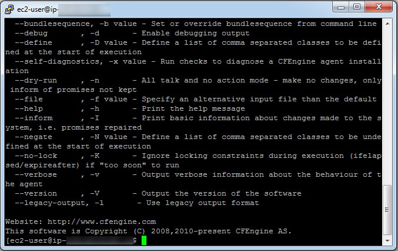
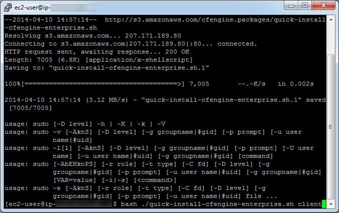

Using Amazon Web Services
This guide describes how to install CFEngine on two Red Hat® Enterprise Linux® (RHEL) virtual machines using Amazon Web Services™ (AWS) and SSH. At the time of writing, under certain conditions, setting up an AWS account and using micro-instances is free.
One of the two machines will be a policy server, while the other will be a host.
Although these instructions walk through the steps needed to install CFEngine Enterprise on two machines, up to 25 machines can be set up using the same procedure and scripts.
This tutorial will cover the following steps:
- Initial Configuration of the AWS Virtual Machines.
- Configuring the Security Group.
- Configuring SSH Access to the Virtual Machines Using PuTTY (for Windows machines).
- Configuring the Firewall on the Policy Server.
- Installing CFEngine on both the Policy Server and Host Virtual Machines.
Initial Configuration of the Virtual Machines in AWS
Configure 2 RHEL Virtual Machine Instances in AWS
- Login to AWS.
- Under
Create Instanceclick onLaunch Instance. - On the line
Red Hat Enterprise Linux 64 Bit Free tier eligiblepress theSelectbutton. - On the
Choose Instance Typescreen ensure theMicro Instancestab on the left is selected.
Configure Instance Details
- Press
Next: Configure Instance Details. - On the
Configure Instance Detailsscreen change the number of instances to 2. - Leave
Networkas the default. Subnetcan beNo preference.- Ensure
Public IPis checked. - Leave all else at their default values.
Review and Launch
- Click
Review and Launch. - Make a note of
Security groupname on theReview Instance Launchscreen. - Click
Launch. - Select
Create a new keypair in the first drop down menu. - Enter anything as the
Key pair name. - Click the
Download Key Pairbutton and save the .pem file to your local computer. - After the .pem file is saved click the
Launch Instancebutton. - On the
Launch Statusscreen click theView Instancesbutton.
Configure the Security Group
- On the left hand side of the AWS console click
NETWORK & SECURITY > Security Groups - Remembering the
Security groupname from earlier, click on the appropriate line item in the list. - Below the list of security group names will display details for the current security group.
- Click the
Inboundtab. - Click "Edit" button. A popup window will appear with "SSH" rule already present.
- Click the
+Add Rulebutton. SelectHTTPfrom the drop-down list. Click "Add Rule" button again. - Select
Custom TCP ruleand enter5308in thePort rangetext entry. Select "Custom IP" from the drop-down menu in the "Source" column. - Copy the "Group ID" from the line containing your "Group Name" and copy the "Group ID" into the text entry in the last column. Click "Save."
- Click the "Edit" button again. On the "Custom TCP" Rule, select "Anywhere" from the "Source" drop-down list. Click "Save."
Accessing the Virtual Machines Using SSH
See: Quick-Start Guide to Using PuTTY
Install and Configure the Firewall
Install the Firewall
- Ensure you are logged into both virtual machines.
- In both enter
sudo yum install system-config-firewallto install. - Hit 'y' if prompted.
Configure the Firewall on the Policy Server (AKA hub)
The following steps are only necessary for one of the two virtual machines, the one that is designated as the policy server; these steps can be omitted on the second (client machine). Note that CFEngine refers to a client machine by the name Host:
- When system-config-firewall is installed, enter
sudo system-config-firewall - In the
Firewall Configurationscreen use theTabkey to go to Customize. - Hit the
Enterkey. Below is theFirewall Configurationwindow that comes up:

Open Port 80 (HTTPD)
- On the
Trusted Servicesscreen, scroll down toWWW (HTTP), AKA port 80. - Hit the
Space Barto toggle theWWWentry (i.e. ensure it is on, showing an asterisk beside the name).
Open Port 5308 (CFEngine)
- Hit the
Tabkey again untilForwardis highlighted, then hitEnter. - Hit the
Tabkey untilAddis highlighted, then hitEnter. - Enter
5308in thePortsection. - Hit the
Tabkey and entertcpin theProtocolsection. - Hit the
Tabkey until OK is highlighted, and hitEnter.

The Port and Protocol are entered in the blue boxes, with entries of 5308 and tcp respectively.
Then the Tab key is used to highlight the OK button, and the user presses Enter.
Wrapping Up Firewall Configuration
- Hit the
Tabkey untilCloseis highlighted, and hitEnter. - Hit the
Tabkey or arrow keys untilOKis highlighted, and hitEnter.
Disabling Firewall on a Host (Warning: Only Do This If Absolutely Necessary)
For the second virtual machine, which is the client machine (also called host), you may need to do the following if you see an error when bootstrapping this virtual machine in later steps:
* In the Firewall Configuration screen use the Tab key to go to Firewall.
* Turn off the firewall by toggling the entry with the Space bar.
Note: Turning off the firewall in a production environment is considered unsafe.
CFEngine Installation Overview
We ready now ready to install the CFEngine software on both the server and client virtual machines. These also referred to as the “hub” and “host” machines, respectively. During the course of the instructions outlined in this guide, you will perform the following tasks:
- Install CFEngine Enterprise onto a Policy Server and onto Hosts. A Policy Server (hub) is a CFEngine instance that contains promises (business policy) that get deployed to Hosts. Hosts are clients that retrieve and execute promises.
- Bootstrap the Policy Server to itself and then bootstrap each of the Hosts to the Policy Server. Bootstrapping establishes a trust relationship between the Policy Server and all Hosts. Thus, business policy that you create in the Policy Server can be deployed to Hosts throughout your company. Bootstrapping completes the installation process.
- Log in to the Mission Portal. The Mission Portal is a graphical user interface that allows you to verify the actual state of all your Hosts, thus ensuring that your promises are being executed.
- Try out the Tutorials. Links to three tutorials give you a head start on learning CFEngine.
Step 1. Download and install Enterprise on a Policy Server
Run the following script on your designated Policy Server (hub), the virtual machine with the configured firewall from earlier steps:
$ wget https://s3.amazonaws.com/cfengine.packages/quick-install-cfengine-enterprise.sh && sudo bash ./quick-install-cfengine-enterprise.sh hub
This script installs the latest CFEngine Enterprise Policy Server on your server machine.
Step 2. Bootstrap the Policy Server
- The Policy Server must be bootstrapped to itself. Find the IP address of your Policy Server:
$ ifconfig. Run the bootstrap command:
sudo /var/cfengine/bin/cf-agent --bootstrap <IP address of policy server>Example:
$ sudo /var/cfengine/bin/cf-agent --bootstrap 172.31.3.25

Upon successful completion, a confirmation message appears: "Bootstrap to '172.31.3.25' completed successfully!"
Type the following to check which version of CFEngine your are running:
/var/cfengine/bin/cf-promises --versionThe Policy Server is now installed.
Step 3. Install Enterprise on Host (Client)
- Ensure you are logged into the host machine setup earlier.
- Install CFEngine client version using the following:
$ wget https://s3.amazonaws.com/cfengine.packages/quick-install-cfengine-enterprise.sh && sudo bash ./quick-install-cfengine-enterprise.sh agent
Note: The installation will work on 64-bit and 32-bit client machines (the host requires a 64-bit machine).

The client software (host), has been installed on the second virtual machine.
Note: You can install CFEngine Enterprise on up to 25 hosts using the script above.
Step 4. Bootstrap the Host to the Policy Server
- All hosts must be bootstrapped to the Policy Server in order to establish a connection between the
Hostand thePolicy Server. Run the same commands that you ran in Step 2,
$ sudo /var/cfengine/bin/cfagent bootstrap <IP address of policy server>.Example:
$ sudo /var/cfengine/bin/cfagent bootstrap 172.31.3.25The installation process is complete and CFEngine Enterprise is up and running on your system.
Step 5. Log in to the Mission Portal
- The Mission Portal is immediately accessible. Connect to the Policy Server through your web browser at: http://
(Note: The External IP address is available in the AWS console). - The default username for the Mission Portal is
admin, and the password is alsoadmin. - The Mission Portal runs TCP port 80 by default. Configure mission portal to use HTTPS instead of HTTP.
- During the initial setup, the Host(s) might take a few minutes to show up in the Mission Portal. Refresh the web page and login again if necessary.
What Next?
Tutorials
Distribute files from a central location.
Whereas the first tutorial in this list teaches you how to deploy business policy through the Mission Portal, this advanced, command-line tutorial shows you how to distribute policy files from the Policy Server to all pertinent Hosts.